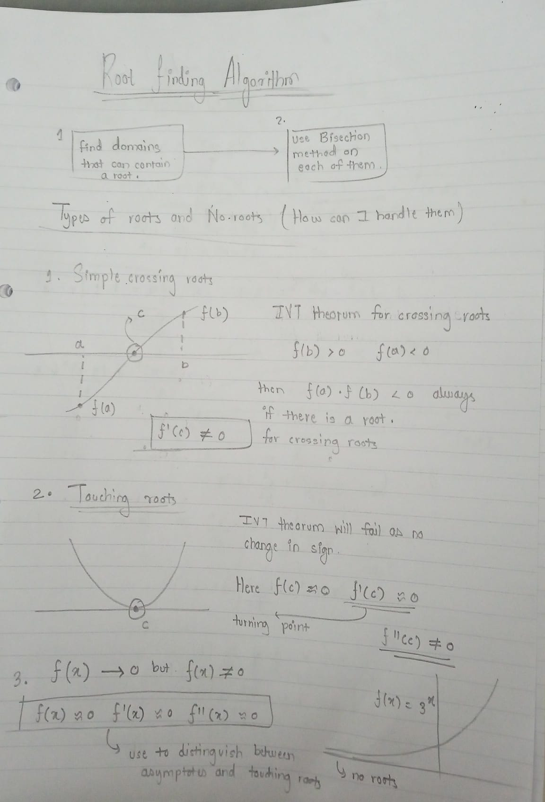
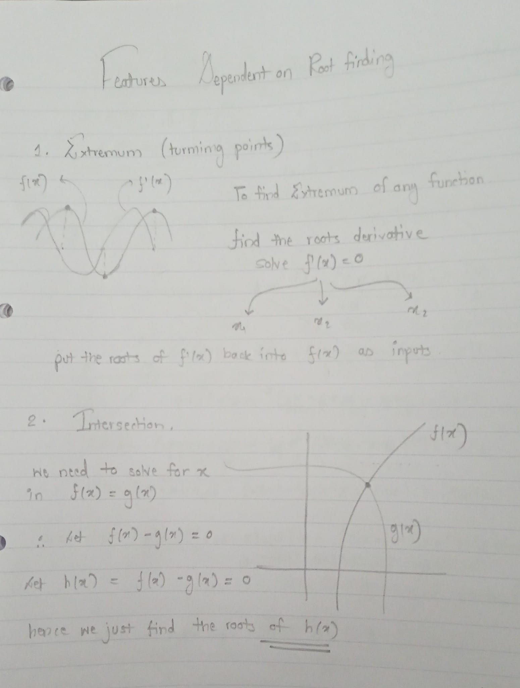
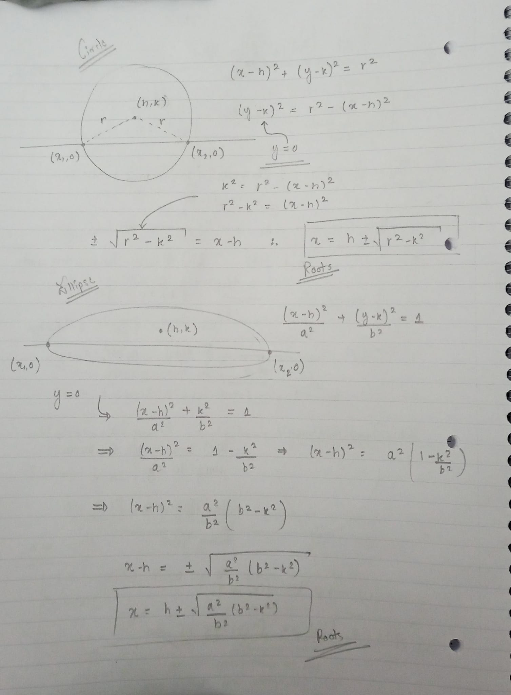
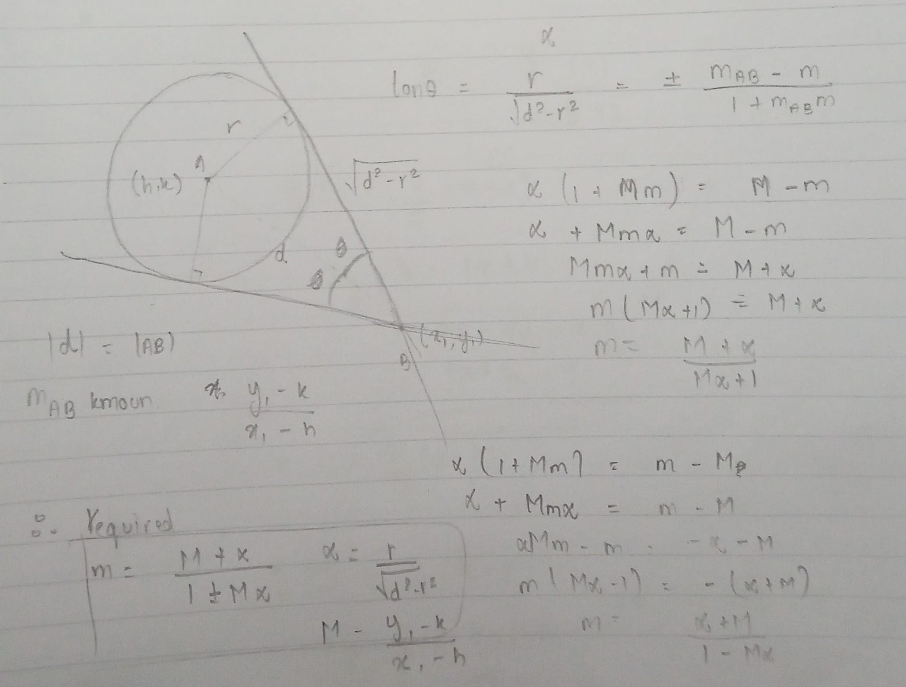
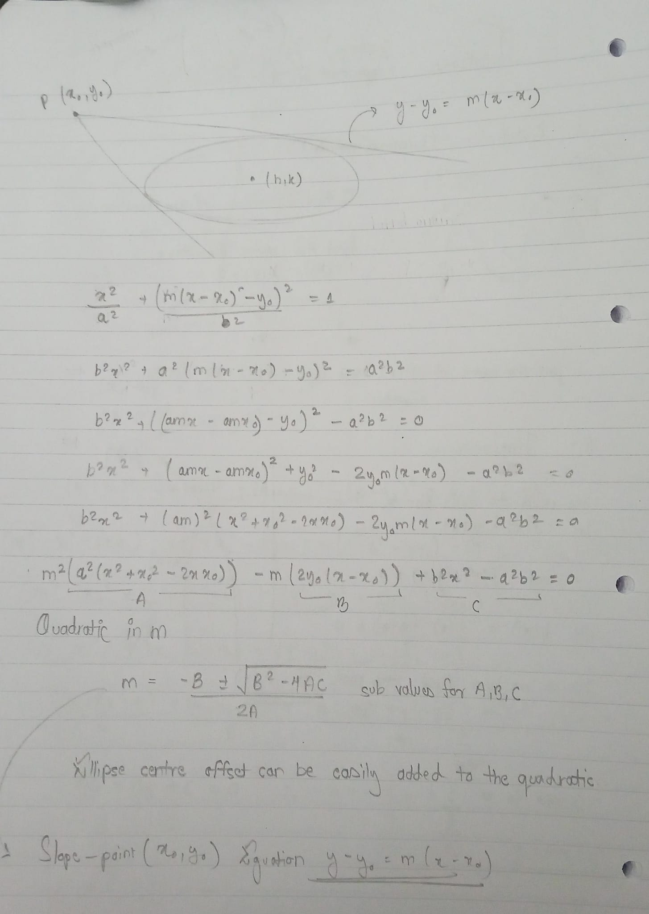
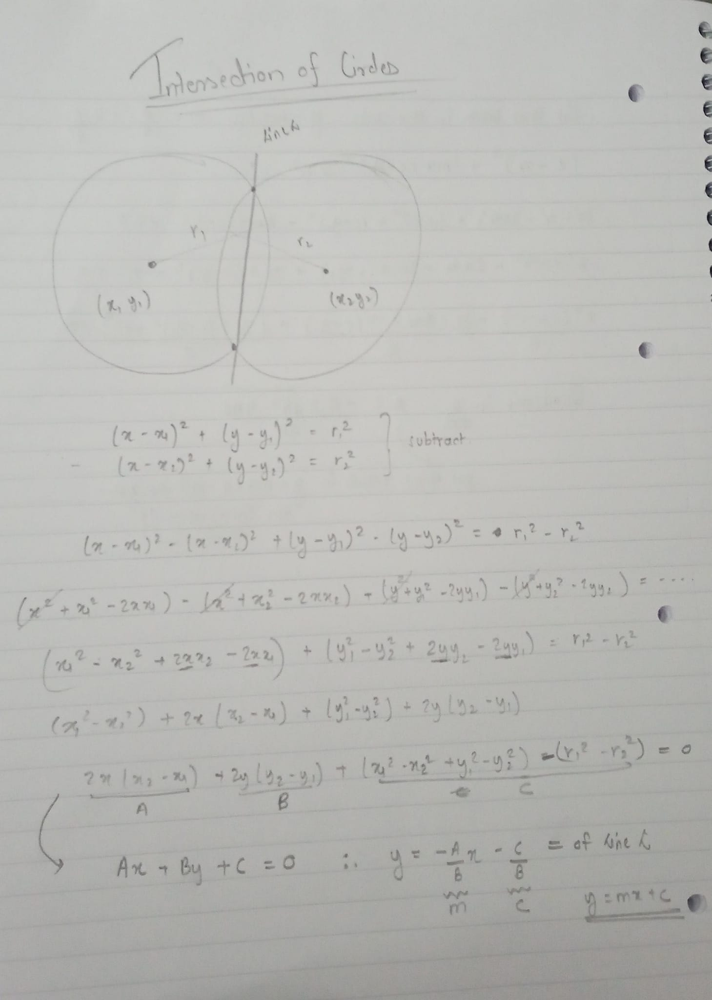
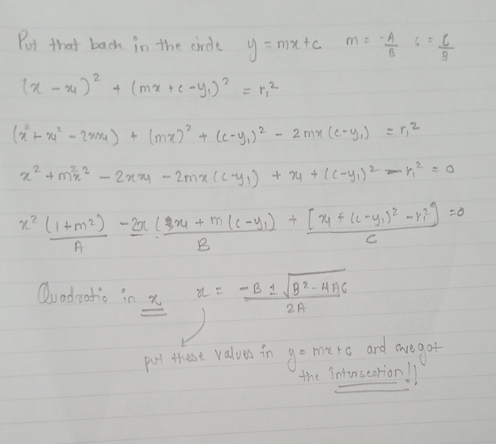

These are the calculations and some planning I did for algorithms and features
Root finding algorithms.

Features dependent on root finding

Roots for circle and ellipse

Tangents for circle

Tangent for ellipses

Intersection of circles

